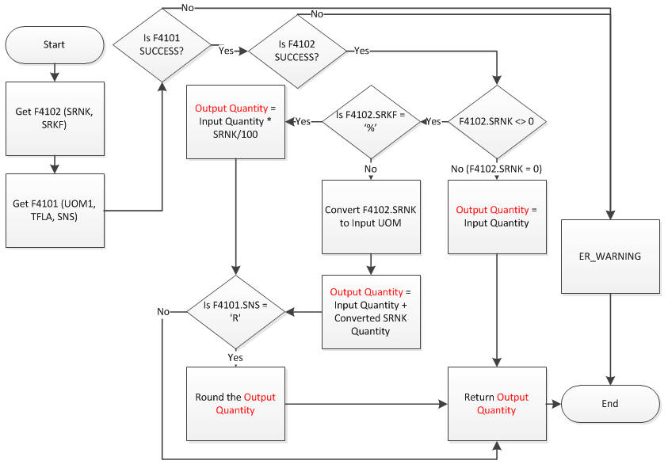

Purpose for this document is to explain how to call standard EnterpriseOne business functions to meet your daily requirement.
In EnterpriseOne Sales/Procurement contain multiple date columns to record accurate information from your business parties. Possibly you may refer below document to meet your daily requirement. Oracle do not advise you to modify any standard functionality so this document is reference only. In case work order is originated from distribution applications, which call below business functions to set valid date for Work Order.
Before you proceed further, refer to below documents:-
<Document 626117.1> E1: 31: P48013 Work Order Start Dates & Back Scheduling Calculations
<Document 881632.1> E1: 31: How Work Order Start Date is Calculated for Variable Lead Time
<Document 660707.1> E1: 34: R3482/R3483 Basics of MRP Dates and Leadtimes
General routine to forward/backward schedule,
B3100290 - CalculateOrderLeadTime (F3009 Calculate Order Lead Time)
B3100250 - CalculateShrinkageQuantity (Calculate Shrinkage Quantity)
B3100300 - ForwardBackwardScheduleDates (F0007 Calculate Forward Backward Schedule Dates)
Note:
Business Function: B3100300 - ForwardBackwardScheduleDates (F0007 Calculate Forward Backward Schedule Dates)
| Parameter Name | Data Item | Data Type | Req | I/O | Others |
|---|---|---|---|---|---|
| szBranchPlant | MMCU | char | OPT | I | Work Order Branch Plant If there is no definition look for on *ALL branch from F0007 |
| jdInputDate | DRQJ | JDEDATE | OPT | I | Date to be Validated |
| jdOutputDate | STRT | JDEDATE | OPT | O | Scheduled Date |
| mnNumberOfDays | LTLV | MATH_NUMERIC | OPT | I | No of Days to forward/backword |
| cScheduleType | WS | char | OPT | I |
|
| cErrorCode | ERRC | char | OPT | O |
|
| szWorkDayCalendarType | WDCT | char | OPT | I | |
| szWorkDayCalendarKey | WDCK | char | OPT | I |
April 2013
| x | 0 | 1 | 2 | 3 | 4 | 5 | 6 | 7 | 8 | 9 | 10 | 11 | 12 | 13 | 14 | 15 | 16 | 17 | 18 | 19 | 20 | 21 | 22 | 23 | 24 | 25 | 26 | 27 | 28 | 29 | 30 | 31 |
| Day | 1 | 2 | 3 | 4 | 5 | 6 | 7 | 8 | 9 | 10 | 11 | 12 | 13 | 14 | 15 | 16 | 17 | 18 | 19 | 20 | 21 | 22 | 23 | 24 | 25 | 26 | 27 | 28 | 29 | 30 | ||
| cDayArray | W | W | W | W | W | E | E | W | W | W | W | W | E | E | W | W | W | W | W | E | E | W | W | W | W | W | E | E | W | W | '\0' |
May 2013
| x | 0 | 1 | 2 | 3 | 4 | 5 | 6 | 7 | 8 | 9 | 10 | 11 | 12 | 13 | 14 | 15 | 16 | 17 | 18 | 19 | 20 | 21 | 22 | 23 | 24 | 25 | 26 | 27 | 28 | 29 | 30 | 31 |
| Day | 1 | 2 | 3 | 4 | 5 | 6 | 7 | 8 | 9 | 10 | 11 | 12 | 13 | 14 | 15 | 16 | 17 | 18 | 19 | 20 | 21 | 22 | 23 | 24 | 25 | 26 | 27 | 28 | 29 | 30 | 31 | |
| cDayArray | W | W | W | E | E | W | W | W | W | W | E | E | W | W | W | W | W | E | E | W | W | W | W | W | E | E | W | W | W | W | W | '\0' |
Note:
Back To Top
Business Function: B3100290 - CalculateOrderLeadTime (F3009 Calculate Order Lead Time)
| Parameter Name | Data Item | Data Type | Req | I/O | Others |
|---|---|---|---|---|---|
| szBranch | MCU | char | OPT | I | Detail Branch or Work Order Branch |
| mnShortItem | ITM | MATH_NUMERIC | OPT | I | Item Number - Short |
| mnOrderQuantity | UORG | MATH_NUMERIC | OPT | I | Quantity to be used in computing quantity with Shrinkage |
| szUnitOfMeasure | UOM | char | OPT | I | Quantity to be used in computing shrinkage |
| mnLeadtimeDays | LTLV | MATH_NUMERIC | OPT | O | Computed leadtime value after shrinkage computation |
| cErrorCode | ERRC | char | OPT | O | Issue Warning |
| cBackscheduleQueueMoveHrsFlag | EV01 | char | OPT | I | 1 - To backschedule queue hours or 0 |
LeadTimeInHours = LeadTimeInHours (= LeadTimeHours / TimeBasisRatio) + StandardSetupHours + QueueHours
LeadTimeDays = LeadTime In Hours / Time Basis Code
| Table | Column | Description | Glossary | Retrieved By |
|---|---|---|---|---|
| F3009 | WRHR | WorkHourPerDay (Hours - Work Hours Per Day) | The number of work hours that the manufacturing plant operates per day. | JDB_FetchKeyed() |
| F3009 | WRH2 | HoursWorkHoursShift29 (Hours - Work Hours Shift 2) | The number of work hours that the manufacturing plant operates in shift 2. | JDB_FetchKeyed() |
| F3009 | WRH3 | HoursWorkHoursShift39 (Hours - Work Hours Shift 3) | The number of work hours that the manufacturing plant operates in shift 3. | JDB_FetchKeyed() |
| F4102 | MRPP | FixedVariableLeadtime (Fixed or Variable Leadtime) | A code that determines whether the system uses fixed or variable leadtimes. This code works in conjunction with the value from either the Level Leadtime field or the Leadtime Per Unit field. Valid codes are: F Fixed leadtime - The system calculates work order start dates using the value from the Leadtime Level field. V Variable leadtime - The system calculates work order start dates using the value from the Leadtime Per Unit field. |
GetItemBranchMfgData |
| F4102 | LTPU | LeadtimePerUnit (Leadtime Per Unit) | The total number of hours required to build one unit as specified on the routing. This value is factored by the time basis code. You can enter this value manually or you can have the system calculate it when you run the Leadtime Rollup program. The system overwrites this value when you run the Leadtime Rollup program. The system uses this field to calculate start dates for work orders when you use variable leadtimes. |
GetItemBranchMfgData No Negative sign |
| F4102 | TIMB | TimeBasisCode (Time Basis Code) | A user defined code (30/TB) that indicates how machine or labor hours are expressed for a product. Time basis codes identify the time basis or rate to be used for machine or labor hours entered for every routing step. For example, 25 hours per 1,000 pieces or 15 hours per 10,000 pieces. You can maintain the time basis codes in Time Basis Codes. The system uses the values in the Description-2 field on the User Defined Codes form for costing and scheduling calculations. The description is what the code represents, but is not used in calculations. |
GetItemBranchMfgData UDC 30/TB |
| F4102 | SRNK | ShrinkFactor (Shrink Factor) | A fixed quantity or percentage that the system uses to determine inventory shrinkage for an item. The system increases the planned order quantity by this amount in MPS/MRP/DRP generation. The shrink factor method you specify for the item determines whether the shrink factor is a percentage or a fixed quantity. If you are entering a percentage, enter 5% as 5.00 and 50% as 50.00 |
GetItemBranchMfgData |
| F4102 | LTCV | LeadtimeConversionFactor (Leadtime Conversion Factor) | A number that the system uses to convert leadtime per unit hours to leadtime per unit days. The leadtime conversion factor is stored in the Item Branch File table (F4102). The system uses leadtime per unit days, cumulative move days, and setup days to calculate the start date for backscheduled work orders. The leadtime conversion factor is based on the sum of the labor hours for each work center shift. The leadtime conversion factor is invoked when the system runs the Leadtime Rollup program (R30822A). Note: The leadtime conversion factor is used only if you specify a variable leadtime in the Item/Branch record. If you specify a fixed leadtime, the system does not use the leadtime conversion factor to calculate leadtime. |
JDB_SelectKeyed() because GetItemBranchMfgData does not have this parameter |
| F4102 | QUED | QueueHours (Queue Hours - Standard) | The total hours that an order is expected to be in queue at work centers and moving between work centers. The system stores this value in the Item Branch table (F4102). You can calculate this value using the Leadtime Rollup program or you can enter it manually. When you run the Leadtime Rollup program, the system overrides manual entries and populates the table with calculated values. |
GetItemBranchMfgData |
| F4102 | SETL | SetupLaborHrsStdr (Setup Labor - Standard) | The standard setup hours that you expect to incur in the normal completion of this item. This value is not affected by crew size. | GetItemBranchMfgData |
| F4102 | LTLV | LeadtimeLevel (Leadtime Level) | A value that represents the leadtime for an item at its assigned level in the production process, as defined on Plant Manufacturing Data. The system uses this value to calculate the start dates for work orders using fixed leadtimes. Level leadtime is different for purchased and manufactured items: Purchased - The number of calendar days required for the item to arrive at your branch/plant after the supplier receives your purchase order. Manufactured - The number of workdays required to complete the fabrication or assembly of an item after all the components are available. You can enter level leadtime manually on Manufacturing Values Entry, or you can use the Leadtime Rollup program to calculate it. To calculate level leadtime using the Leadtime Rollup program, you must first enter a quantity in the Manufacturing Leadtime Quantity field in the Item Branch table (F4102). |
GetITemBranchMfgData |
Back To Top
Business Function: B3100250 - CalculateShrinkageQuantity (Calculate Shrinkage Quantity)
| Parameter Name | Data Item | Data Type | Req | I/O | Others |
|---|---|---|---|---|---|
| szCostCenter | MMCU | char | OPT | I | Detail Branch/Plant |
| mnShortItem | ITM | MATH_NUMERIC | OPT | I | Item Number - short |
| mnInputQuantity | UORG | MATH_NUMERIC | OPT | I | Quantity to compute without shrinkage |
| mnOutputQuantity | TRQT | MATH_NUMERIC | OPT | O | Quantity with shrinkage |
| szUnitOfMeasure | UM | char | OPT | I | transaction quantity |

| Table | Column | Description | Glossary | Retrieved By |
|---|---|---|---|---|
| F4101 | UOM1 | UnitOfMeasurePrimary (Unit of Measure - Primary) | Primary UOM | VerifyAndGetItemMaster |
| F4101 | TFLA | TemporaryItemFlashMessag (Standard Unit of Measure Conversion) | Allows you to bypass the item-specific unit of measure and use the standard unit of measure. Valid values are: blank Use the item-specific unit of measure 1 Bypass the item-specific unit of measure and use the standard unit of measure |
VerifyAndGetItemMaster |
| F4101 | SNS | StockNonstock (Round to Whole Number) | A code that determines whether the system performs rounding for planning purposes. Valid values are: R Round either up or down to the nearest whole number. U Round up to the nearest whole number. Blank Do not round. Example of value R: If the calculated requirements for an item are 4.6, the system rounds the quantity required to 5.0. If the calculated requirements are 4.4, the system rounds the quantity required to 4.0. Example of value U: If the calculated requirements for an item are greater than 4.0 and less than or equal to 5.0, the system rounds the quantity required to 5.0. |
VerifyAndGetItemMaster |
| F4102 | SRNK | ShrinkFactor (Shrink Factor) | A fixed quantity or percentage that the system uses to determine inventory shrinkage for an item. The system increases the planned order quantity by this amount in MPS/MRP/DRP generation. The shrink factor method you specify for the item determines whether the shrink factor is a percentage or a fixed quantity. If you are entering a percentage, enter 5% as 5.00 and 50% as 50.00. |
GetItemBranchMfgData |
| F4102 | SRKF | ShrinkFactorMethod (Shrink Factor Method) | A value that determines whether the shrink factor you enter for this item is a percentage or a fixed quantity. Valid values are: % Percentage of order or requested quantity F Fixed amount to be added to quantity |
GetItemBranchMfgData |
Back To Top